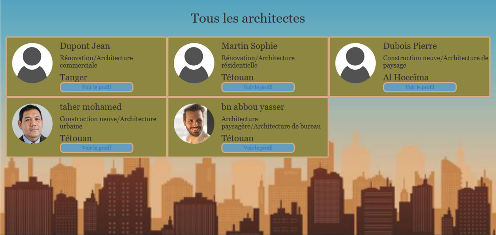

The online platform dedicated to architect services provides an efficient and convenient way to facilitate the connection between architects and potential clients.
NAME : Archima.
Project theme: Engage architects..
Tools: HTML /CSS /PHP /MySQL /JS /Bootstrap /Angular.
Directed by : ABAICH Mohamed/SGHIAR abdlah/BEN ABBOU yasser.
About : The website for architects' service listings can provide an efficient and convenient platform for architects and potential clients to connect, thereby enhancing the visibility of the business, attracting new clients, and improving communication with potential clients.
(date created : 21-06-2023)The system encompasses three main actions: searching for an architect based on the city, the second action involves architect registration, and the third action is dedicated to connecting to the architect's account.
1- It displays all architects who have created their profiles.
2- It presents the results of the architecture search in Tetouan.
3- For a selected architect, it provides comprehensive information for contacting them
4- It showcases the architect registration interface.
5- It presents the authentication page for architects.
6- It exhibits the architect space (profile) where they can modify both their public and personal information